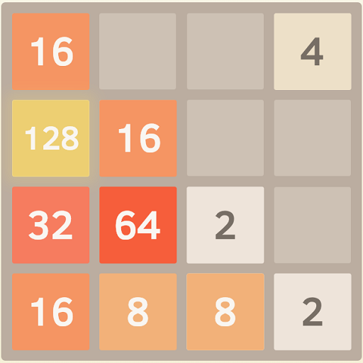
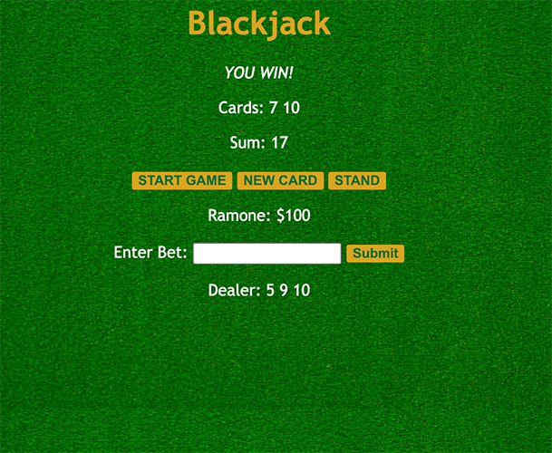
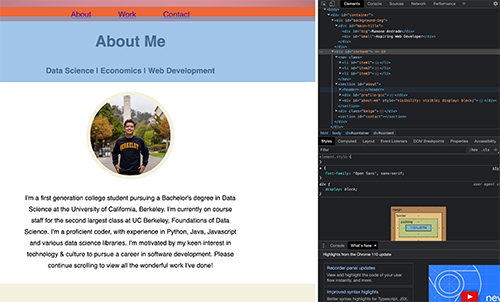

About Me
Data Science | Economics | Web Development
I'm a first generation college student pursuing a Bachelor's degree in Data Science with an emphasis in Economics at the University of California, Berkeley.
I'm currently on course staff for the second largest class at UC Berkeley, Foundations of Data Science.
I'm a proficient coder, with experience in Python, Java, Javascript and various data science libraries.
I'm motivated by my keen interest in technology & culture to pursue a career in software development.
Please continue scrolling to view all the wonderful work I've done!
Projects
Things I've Worked On So Far
Gitlet
In my implementation of Gitlet, I used file persistence, cryptographic hashing (the way Git uses SHA-1 hashes), graph traversals, and a combination of data structures.
Beyond the techincal intricacies, this project emphasized software engineering design principles such as efficiency, decomposition, and clean style.
Unlike other class projects, Gitlet required that each student design their own implementation and build it from scratch— no skeleton code. It required design thinking. Instead of just going in, filling in given methods, and testing code, I had to make all the pieces fit together. I had to determine how I was going to design the data structures before I could even touch the code.
2048

2048 is a single-player sliding block puzzle game designed by Italian web developer Gabriele Cirulli.
The game's objective is to slide numbered tiles on a grid to combine them to create a tile with the number 2048.
I utilized the Java Programming language to build the popular tile based game. I implemented all of the game's core logic such as representing a win, checking for valid moves, and I also implemented the UI to create the board that users interact with.
Blackjack

My implementation of the Blackjack game highlights my proficiency in using JavaScript to build engaging user interfaces and handling logic to simulate a complex game. My use of buttons and event listeners to manage user input, as well as my implementation of the dealer's behavior, demonstrates mastery of the language's syntax and programming concepts.
Overall, the Blackjack project showcases my competency in JavaScript and my ability to create fully functional and engaging applications using this language.
This Website

My personal website is a live project that I am constantly working on to showcase my skills in HTML, CSS, JavaScript, and overall front-end development principles.
As a front-end developer, I understand the importance of a well-designed and user-friendly website, and my personal website reflects this.Throughout the website, I have emphasized my proficiency in front-end development principles such as responsive design, accessibility, and optimization. As my knowledge and skills continue to grow, I am constantly adding to my personal website to showcase my latest work and techniques. I am excited to share my passion for front-end development with others and hope my website serves as a testament to my skills and creativity.